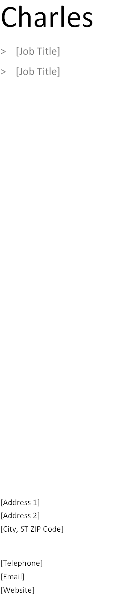

Objective
Getting the perfect job might be challenging, but a great-looking résumé doesn’t have to be! We’ve provided a few quick tips to help you get started. To replace any tip text with your own, just click it and start typing.
Need another experience or education entry? You got it. Just click in the sample entries below and then click the plus sign that appears. Looking for a matching cover letter? All you had to do was ask! On the Insert tab, click Cover Page.
Experience
[Dates From - To]
[Company]
[Position Held]
> Click here to enter text.
> Click here to enter text
> Click here to enter text
Education
[Dates From - To]
[School Name, Location]
[Degree]
> Click here to enter text.
> Click here to enter text
References
References are available upon request.